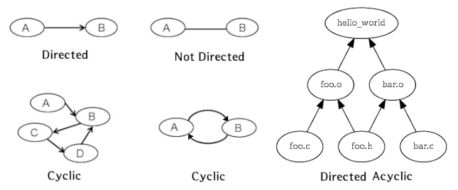
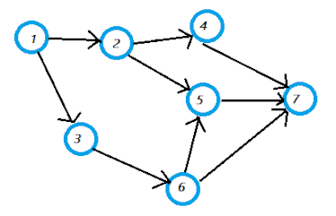

Directed Acyclic Graph

사용자가 작성한 rule 들은 make 에 의해 읽어들여져 최종적으로 DAG ( Directed Acyclic Graph ) 형태로 구성되어 실행됩니다. 여기서 Directed 는 방향성이 있다는 의미이고 Acyclic 은 순환이 없다는 의미인데 방향성이 있으면서 순환이 안된다는 것은 다시 말해서 작업 방향이 뒤로 갈수 없다는 의미입니다. 예를 들어서 A 에서 빌드한 결과를 가지고 B 를 빌드하고 B 에서 빌드한 결과를 가지고 C 를 빌드한 후에 C 에서 빌드한 결과를 가지고 다시 A 나 B 를 빌드할 수 없습니다.
다음은 bar 에서 빌드한 결과를 가지고 foo 를 빌드하고 foo 에서 빌드한 결과를 가지고 다시 bar 를 빌드하려고 한것인데 circlular dependency 로 drop 되는것을 볼 수 있습니다.
foo : bar foo : bar
@echo making $@ ... @echo making $@ ...
bar : bar : foo
@echo making $@ ... @echo making $@ ...
###### 실행 결과 ###### ###### 실행 결과 ######
making bar ... making bar ...
making foo ... making foo ...
make: Circular bar <- foo dependency dropped.
----------------------------------------------
AAA : BBB CCC
@echo $@
BBB :
@echo $@
CCC : AAA
@echo $@
###### 실행 결과 ######
BBB
make: Circular CCC <- AAA dependency dropped.
CCC
AAA
makefile 이 실행될 때 모든 rule 은 at most 1 번만 실행됩니다. 다시 말해서 특정 rule 이 prerequisites 에 여러번 존재하여도 1 번만 실행됩니다. 다음을 보면 foo 와 bar 타겟은 동일하게 aaa, bbb 를 prerequisites 으로 가지고 있지만 foo 타겟을 빌드할때 이미 aaa, bbb 타겟이 빌드가 완료되었으므로 bar 타겟 빌드시에는 다시 빌드되지 않습니다. 만약에 다시 돌아가서 aaa, bbb 를 빌드한다면 acyclic 에도 위배가 되겠죠
all : foo bar
foo : aaa bbb
@echo making $@ ...
bar : aaa bbb
@echo making $@ ...
aaa :
@echo making $@ ...
bbb :
@echo making $@ ...
##### 실행 결과 #####
making aaa ...
making bbb ...
making foo ...
making bar ... # bar 타겟 빌드시에는 다시 aaa, bbb 가 빌드되지 않는다.
rule 을 중복 실행하려면
다음은 동일한 실행 결과를 갖는 makefile 인데요. 차이점이 무엇일까요? 첫 번째 예제는 prerequisites 을 통해 의존관계를 설정하고 있지만 두 번째 예제는 recipe 에서 직접 make 명령을 통해 룰을 실행하고 있습니다. 따라서 처음 실행 시에는 두 makefile 의 실행 결과가 같겠지만 두 번째 빌드부터는 달라지겠죠. 만약에 res1 파일이 수정됐을 경우 첫 번째 예제는 res1 과 foobar 만 실행되지만 두 번째 예제는 foobar 타겟의 recipe 에있는 룰들이 항상 모두 실행됩니다.
MAKEFLAGS += --no-print-directory
.PHONY: foobar .PHONY: foobar
foobar : res1 foobar :
@echo making $@ from res1, res2 @make res2
@make res1
res1 : res2 @echo making $@ from res1, res2
@echo making $@ from res2
res1 :
res2 : @echo making $@ from res2
@echo making $@
res2 :
@echo making $@
####### 실행 결과 ####### ####### 실행 결과 #######
making res2 making res2
making res1 from res2 making res1 from res2
making foobar from res1, res2 making foobar from res1, res2
makefile 실행 시에는 동일한 룰이 중복 실행되지 않지만 다음과 같이하면 중복 실행할 수 있습니다.
MAKEFLAGS += --no-print-directory
all : foo bar
foo :
@make res1
@echo making $@ from res1
bar :
@make res1
@echo making $@ from res1
res1 :
@echo making res1 ...
############ 실행 결과 ############
making res1 ...
making foo from res1
making res1 ... # res1 룰이 중복 실행된다.
making bar from res1
prerequisites 에있는 타겟 실행 순서 변경하기
보통 prerequisites 에있는 타겟들은 작성 순서대로 왼쪽에서 오른쪽으로 실행이 됩니다
( single thread 일경우 ).
이때 만약에 실행 순서를 변경하고 싶으면 아래 예제와 같이 의존 관계를 나타내는
타겟 라인을 추가해주면 됩니다.
이것은 make 을 -j 옵션을 이용해 병렬로 실행할 때도 동일하게 적용됩니다.
foo : aaa bbb | ccc foo : aaa bbb | ccc
aaa : # order-only prerequisite 을 먼저 실행하기 위해 의존성 추가
@echo $@ aaa bbb : ccc
bbb : aaa :
@echo $@ @echo $@
ccc : bbb :
@echo $@ @echo $@
ccc :
@echo $@
### 실행 결과 ### ### 실행 결과 ###
sh$ make sh$ make
aaa ccc # aaa bbb 보다 ccc 가 먼저 실행된다.
bbb aaa
ccc bbb
Quiz
다음 DAG 그래프대로 rule 을 작성한 후에 어떤 순서대로 실행되는지 한번 확인해보세요.
또한 -j 옵션을 이용해 병렬로 실행했을 경우는 어떤 룰들이 동시에 실행되는지 확인해보세요

777 : 444 555 666 # 노드 777 은 444 555 666 로 부터 의존성을 가짐
@echo $@
@sleep 1
444 : 222 # 노드 444 는 222 로 부터 의존성을 가짐
@echo $@
@sleep 1
555 : 222 666 # 노드 555 는 222 666 로 부터 의존성을 가짐
@echo $@
@sleep 1
666 : 333 # 노드 666 은 333 로 부터 의존성을 가짐
@echo $@
@sleep 1
222 : 111 # 노드 222 는 111 로 부터 의존성을 가짐
@echo $@
@sleep 1
333 : 111 # 노드 333 은 111 로 부터 의존성을 가짐
@echo $@
@sleep 1
111 :
@echo $@
@sleep 1
####### 실행 결과 #######
sh$ make sh$ make -j8
111 111
222 222 # 222 333 동시에 실행
444 333
333 444 # 444 666 동시에 실행
666 666
555 555
777 777
2.
DAG 과 Tree 의 차이점은 무엇일까요?
### Tree ### ### DAG ###
Connected Connected
Directed Directed
Root Node Root Node
No Cycles No Cycles
One Parent One Or More Parents